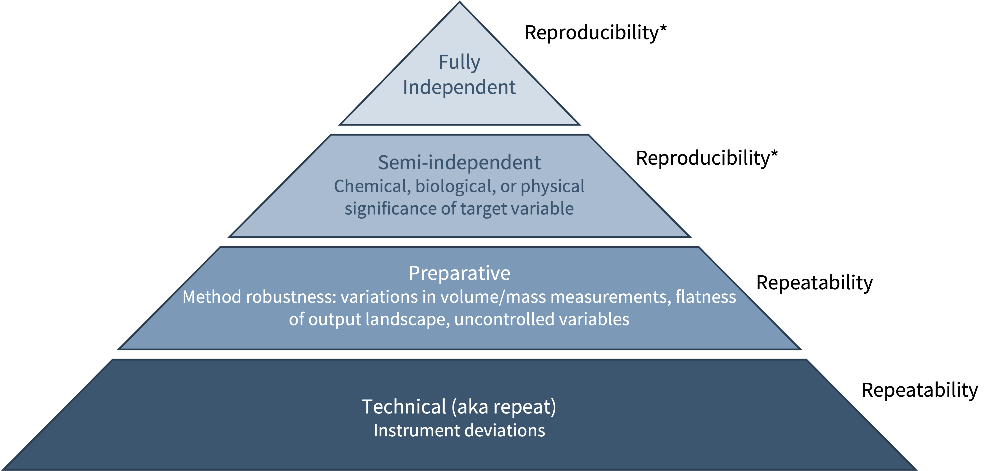
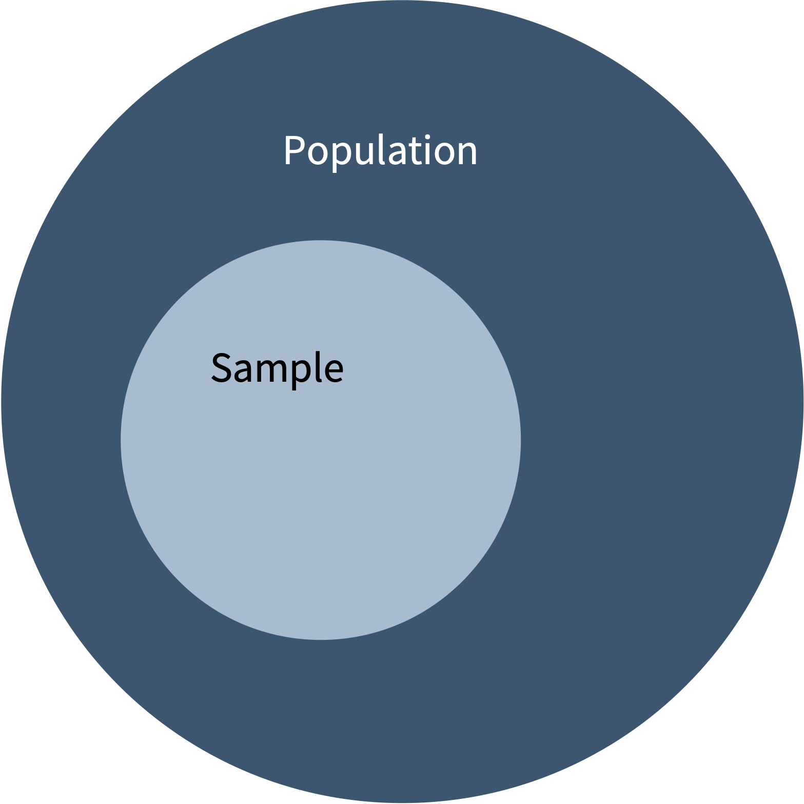
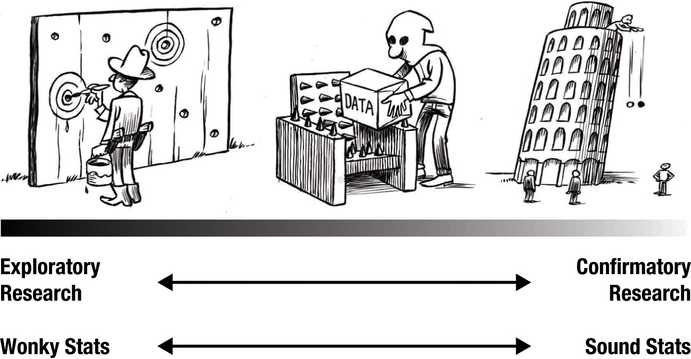
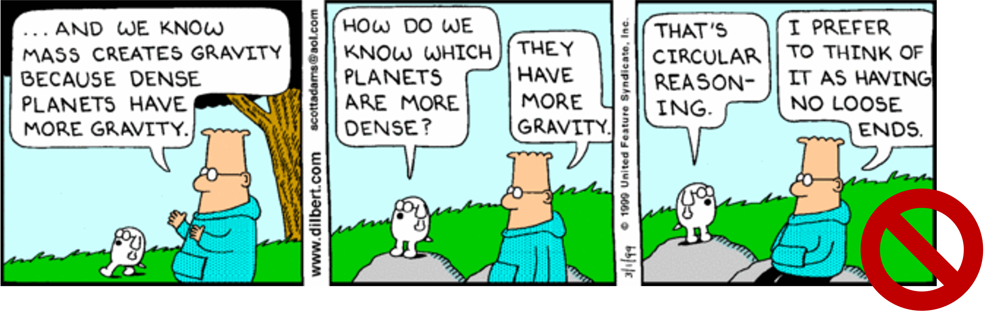
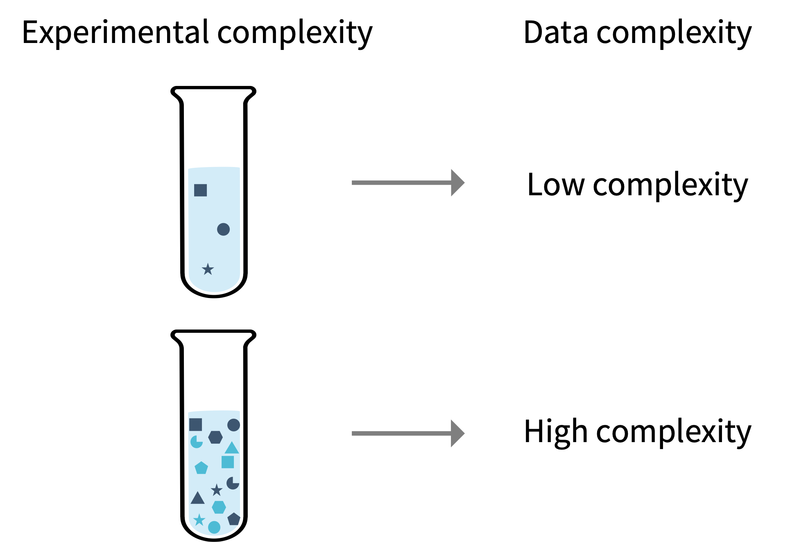
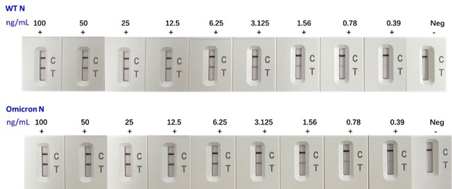
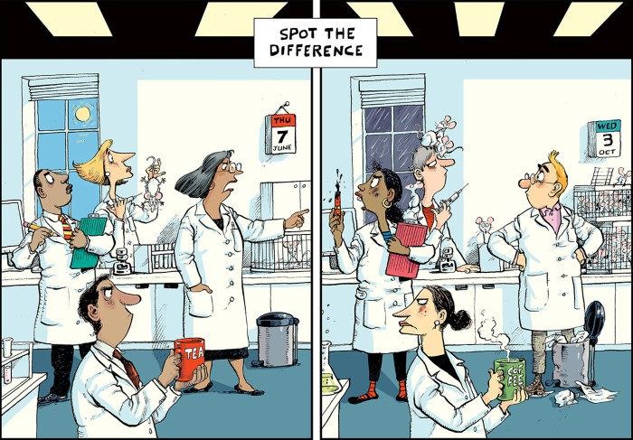

2. Experimental Design
This session is about designing an experiment so that its data can support a real conclusion. We focus on core concepts in this area:
- controls,
- replicates, and
- the exploratory/confirmatory distinction.
Please note, another important feature of experimental design is calibration. We will discuss this in the session on correlation and regression.
The Python work introduces four core data structures used to store that data:
- lists,
- tuples,
- sets, and
- dictionaries.
When Does Data Analysis Begin?
A poorly designed experiment cannot be rescued by rigorous data analysis. In classical science, we say that failing to include appropriate controls or account for relevant variables produces uninterpretable data. In machine learning, low-quality input produces low-quality models, or more colloquially, “garbage in, garbage out.”
The goals of good experimental design are to ensure that scientific conclusions are valid even to a determined skeptic and to actively exclude alternative explanations. This means statistical thinking must begin before any data are collected.
Control Experiments
Controls are experiments in which a specific variable is regulated rather than tested. They confirm that the experimental system is working as expected.
Negative control: a key component is omitted or replaced with a non-functional version. Confirms that any observed signal is specific to the component under test, not an artefact of the system.
Positive control: the tested component is replaced with one of known, sufficient activity. Confirms the assay can detect the expected signal.
In computational contexts and some biological fields, the analogous concept is benchmarking, comparing a new method against an established standard.
It is important to understand that each control answers a different question! A passing positive control indicates that you can quantify a response, but nothing about whether your test sample is active. A passing negative control quantifies the background signal, but again, nothing about the test sample. Both together allow you to interpret the test result: if the positive control works and the negative control is clean, a positive result from the test sample is meaningful and attributable to the variable being studied.
As experimental systems become more complex, the number of meaningful controls typically increases.
Please note that in German and English the words control and monitoring do not overlap exactly. A consequence is that in chemistry a common direct translation from German is to say “reaction control” to refer to a sample that you take from the reaction to test by TLC, LC, GC, etc. This is not technically a “control experiment”. This would be “reaction monitoring”. These are different concepts.
Random Variables and Events
In statistics, we are often discussing a random variable (\(X\)) and events (\(x\)).
- A random variable (\(X\)) is a variable whose value results from a random process and can take a range of possible values.
- An event (\(x\)) is an individual observation of a random variable, written as \(x_1\), \(x_2\), \(x_3\).
Note: The case, capital or lower case, matters!
Consider an experiment: you measure the extinction coefficient of a compound three times, obtaining 13200, 13500, and 13400 M⁻¹cm⁻¹. The extinction coefficient is a random variable (\(X\)), and from each measurement you derive an event (\(x_1\), \(x_2\), \(x_3\)).
Random variables can be:
- Continuous — takes on any value within a range (e.g. reaction yield, absorbance, extinction coefficient)
- Discrete — takes on specific, countable values (e.g. the identity of the major product of a reaction)
Because experimental outcomes contain variability, a single measurement tells you very little about the underlying distribution. Thus, multiple observations are required for robust conclusions, these multiple observations are called replicates.
Replicates
Replicates are multiple experimental runs performed under the same conditions. Variability between replicates arises from many sources: human technique, variation in reagents, instrument variations, environmental effects, and so on.
Replicates serve two purposes:
- Characterize the variability inherent in the measurement
- Provide a best estimate of the unknown true value
Replicate terminology is inconsistent across fields. For this course, we will use the following definitions:
| Term | Meaning | Variation evaluated |
|---|---|---|
| Technical | Repeated measurement of the same prepared sample | Instrument |
| Preparative | Separately prepared samples under the same conditions | Instrument, Scientist |
| Biological | Agreement between results from the same operator, equipment, and short time interval | Instrument, Scientist, Complex biology |
| Fully independent | Agreement between results obtained under different conditions (operators, laboratories, equipment, lot numbers) | Everything |

Reporting only preparative or technical replicates while presenting them as biological or independent replicates. is one of the more common forms of inadvertent misrepresentation in chemistry papers.
The distinction between these replicates is frequently overlooked with real consequences for what can be claimed from the analysis.
Repeatability vs. Reproducibility is also a source of terminology disagreement. The pyramid above and the definitions below indicate how we will use these terms in this course.
Repeatability is the ability to achieve agreement between repeated measurements and their results under the same conditions (including operator, procedure, location, instruments etc). This is a lower level claim than reproducibility.
Reproducibility is the ability the achieve agreement between measurement and their results when conditions outside of the procedure differ (such as operatoor, lab, days, calibrations, instruments). This is a higher level claim than repeatability.
Population vs. Sample
The population contains all possible observations of a random variable. In principle, every measurement you could ever make under identical conditions. In practice, the population is never fully accessible (except maybe in some humanities cases).
In statistics, a sample is the subset of observations/events you actually collect/measure.

- Descriptive statistics summarizes the sample that is observed.
- Inferential statistics uses the sample to make conclusions about the population.
When we are using known information to project an outcome outside a known range, this is called extrapolation. Both inference and extrapolation create inherent uncertainty, and managing that uncertainty rigorously is a central challenge of statistical analysis.
We will discuss these two forms of statistics throughout the bulk of the course.
In chemistry and biochemistry, the distinction between population and sample is very concrete:
If you are measuring the extinction coefficient of a compound, the “population” is every possible measurement of that compound under those exact conditions. This is a number you can approach but never fully realize.
If you collect three replicates, this is your sample, with a size (\(n\)) of 3. When you report a metrics like mean or standard deviation, you are using your sample to estimate properties of the population. The quality of that estimate depends on how representative your sample is and how many observations you collected.
In a later session, we will discuss how to evaluate this estimation.
Exploratory vs. Confirmatory Experiments
From a black-and-white perspective, there are two phases of research discovery.
- Exploratory research
- Confirmatory research
Exploratory research is conducted during the discovery phase. The experiments and results are designed to generate hypotheses and guide future experiments. Statistical restrictions are less stringent, and results should be interpreted with caution.
Confirmatory research is used to test a specific, pre-stated hypothesis informed by prior exploratory work. They require careful planning, adequate sample sizes, and pre-specified analysis methods. Statistical restrictions are more stringent.
A practical example: You test 10 catalysts as well as negative and positive controls. You find that “catalyst F” gave the highest product yield compared with an industry standard. You then take catalyst F and perform several replicates to test your hypothesis that catalyst F is superior to your positive control. You include negative and positive controls in your experiment.
The surveying of 10 catalysts is an exploratory experiment, whereas the comparison of catalyst F with your industry standard with several replicates and controls is your confirmatory experiment.
It is important to recognize that both exploratory and confirmatory experiments are necessary for science! But these two phases necessitate different levels of statistical rigor.
Also important is that in reality, there is also a tortured grey space. This tortured space is where much of science functions.

IMPORTANT: the same dataset cannot be used for exploratory research and confirmatory research.
Why? You create a logical loop: I used these data to generate a hypothesis, then I used my hypothesis to re-evaluate those data, and my hypothesis was confirmed. - This is circular reasoning.

This logical fallacy is a known contributor to inflated false positive rates in the literature and a driver of the reproducibility crisis in science.
Best practice: pre-determine hypotheses before collecting confirmatory data, or explicitly separate the two datasets prior to any analysis.
Heterogeneity of the field
But my field doesn’t need replicates or controls.
I hear this argument often. I think it boils down to two factors: experimental complexity and the necessary rigor.
- If your reactions are less complex, there is often less variability and a lower need for controls.
- Example: academic synthetic chemistry vs. cell biology

- If you are mostly in the exploratory phase of research, you might not find replicates as necessary.
- Example: academic vs. industrial synthetic chemistry
Summary: Designing a Good Experiment
Before collecting data, consider:
- What parameters need controls, and what type of control is appropriate?
- Do the results need to be compared to a reference standard?
- How many replicates are needed, and of what type?
- What are the main sources of variability?
- What level of uncertainty is tolerable for the scientific question?
These questions directly determine which statistical methods will be appropriate when the data are analyzed.
Note: another important question is “Is the analytical method sensitive and specific enough for the measurement?”. We will discuss this in our session on correlation and regression analysis.
Storing Experimental Data in Python
Good experimental design produces data that has to be stored and organized before it can be analyzed. Python has several tools for storage and organization. Today, we will discuss four of the core structures for this organization: lists, tuples, sets, and dictionaries. These are essential building blocks for data analysis in Python.
Lists
A list stores multiple items in a single variable. Lists are ordered, changeable, and allow duplicates. They don’t have to consist of all the same type of scalar.
Accessing list elements
Python starts counting at zero! So the first item in a list is considered to be in position zero!
Slicing
The : operator selects a range. The end index is not included:
Modifying lists
Feel free to alter or add to the cells above to test questions you might have or ensure understanding. Click Start Over on the top of each cell to reset the cell.
Tuples
A tuple is ordered but immutable (cannot be changed after creation). Created with parentheses:
Tuples are useful when data should not be accidentally modified. For example, as return values from functions, which we will cover in a later session.
Sets
A set is an unordered collection with no duplicates. Created with curly braces:
Sets are useful for removing duplicates from a list and testing membership:
Note: you do not create an empty set by using empty curly braces, that creates a dictionary!
Dictionaries
A dictionary stores data as key:value pairs. As of Python 3.7, dictionaries are ordered and changeable.
Accessing and extending dictionaries
Checking the data type
Don’t know what type of variable something is? Check the type with type(variable).
Choosing the Right Data Structure
| Structure | Ordered | Changeable | Duplicates | Use case |
|---|---|---|---|---|
| List | Yes | Yes | Yes | Ordered collection of measurements |
| Tuple | Yes | No | Yes | Fixed data (return values, coordinates) |
| Set | No | Yes | No | Unique items, membership testing |
| Dictionary | Yes | Yes | No (keys) | Named data (key-value lookup) |
- Conclusions are constrained by experimental design — think statistically before collecting data.
- Positive and negative controls answer different questions; you need both to interpret a result.
- Distinguish technical vs. independent replicates (and repeatability vs. reproducibility).
- Never reuse exploratory data to confirm the hypothesis it generated (double-dipping / HARKing).
- In Python: a list is ordered/changeable, a tuple immutable, a set unique/unordered, a dictionary key→value.
Further information
The information that we talked about today can even be seen in every day life. Remember back to the covid pandemic and the lateral flow tests at home. What are the features on these tests that we learned about today?

Replication is a hot topic in science, and there is not always a consensus on what constitutes best practices. Below are some references in case you are interested in further reading on the topic.

- The best time to argue about what a replication means? Before you do it - Nature article
- Replication - Nature Methods article
In person session
TBD